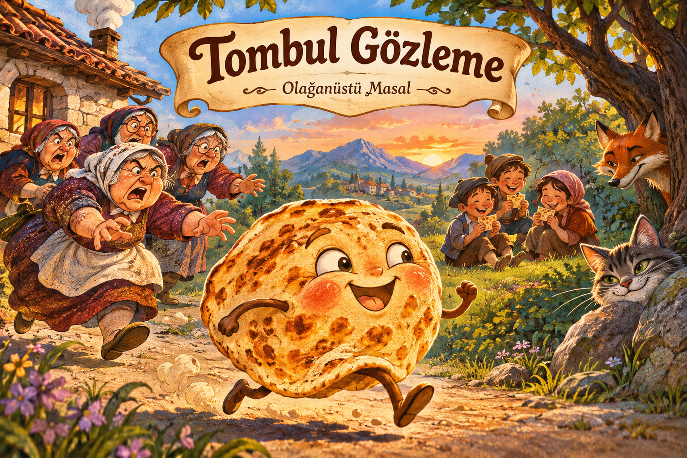
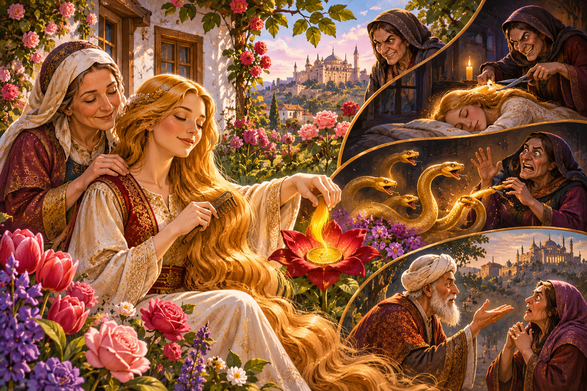
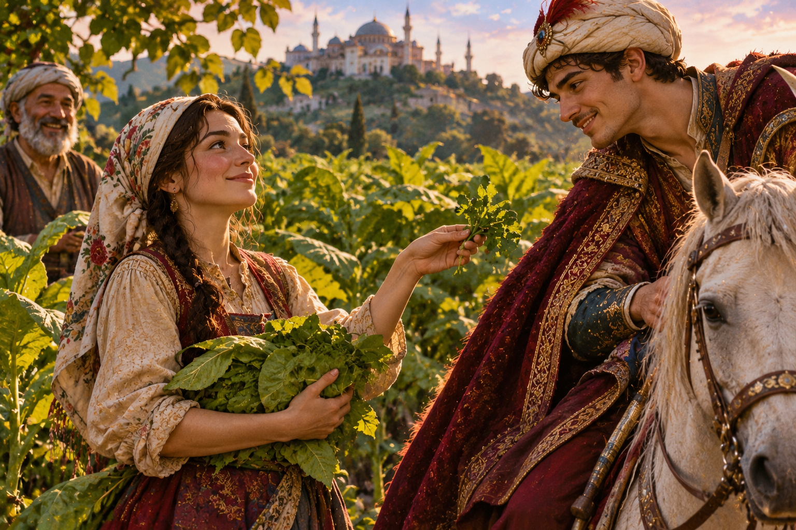
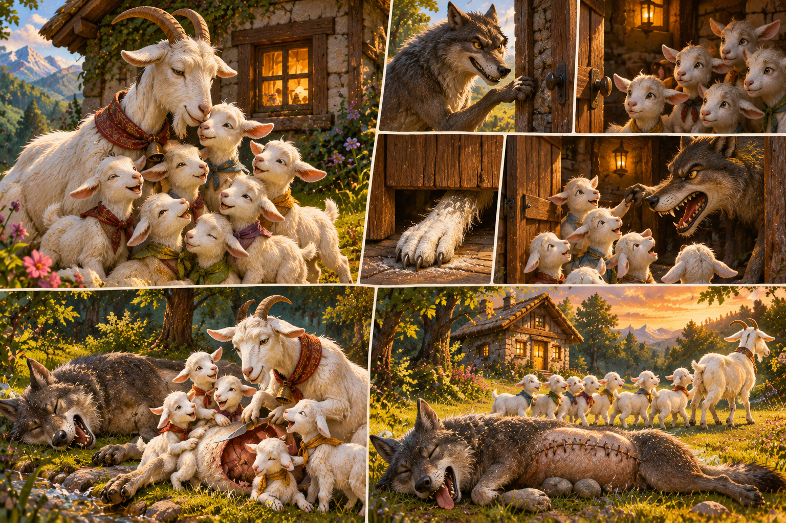
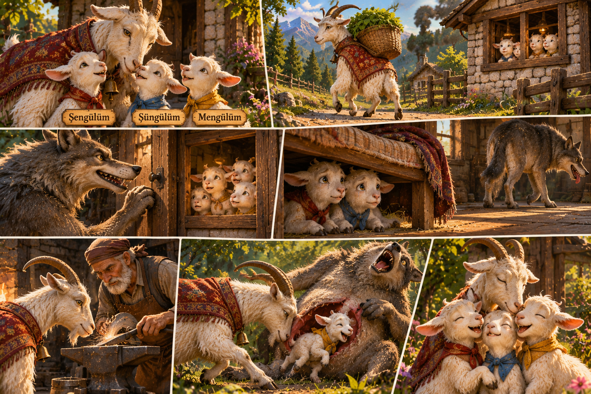
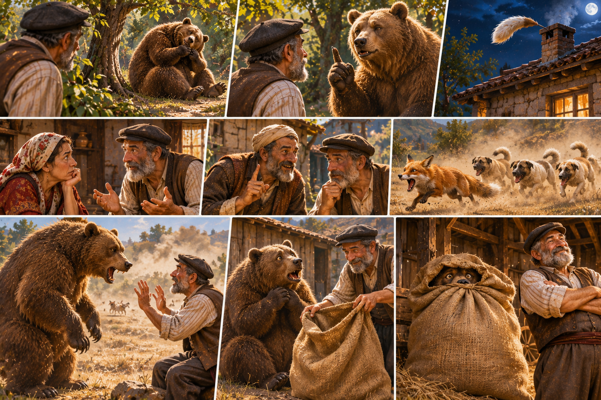
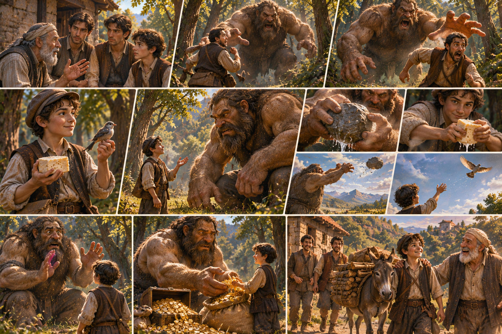

Tombul Gözleme
Üç yaşlı kadının elinden kaçan haylaz ve tombul bir gözlemenin öyküsü.

Altın Saçlı Kız
Güzeller güzeli Gülnar ve annesinin gizemli altın veren çiçekleri ile onları kıskanan bir kadının ibretlik masalı.

Tütüncü Kız
Sarayın av meraklısı oğlu ile kaderine inanan akıllı tütüncü kızın saray masasında kesişen sevgi dolu hikayesi.
Aslan Padişah ile Fare
Zamanında kendisini küçük görüp küçümseyen ormanlar kralını, avcıların ağından keskin dişleriyle kurtaran cesur fare dostunun hikayesi.

Anne Keçinin Yavruları ile Kurt
Annesinin öğütlerini unutup kapıyı unlu ayaklı hilekar kurda açan yedi yavru oğlağın ve onları kurtaran akıllı anne keçinin masalı.

Şengülüm Şüngülüm Mengülüm
Bilebilediği sivri boynuzlarıyla hilekar kurdun karnını açarak kardeşi Mengülümü kurtaran anne keçinin ders verici hikayesi.

Memiş Dayı
Ayının sırrını eşine açıklayan Memiş Dayı'nın, komşusunun kurnaz tilki planıyla ayı zulmünden kurtuluş öyküsü.

Akıllı Çocuk ile Dev
Korkunç devin karşısına peynir ve kuş hilesiyle dikilerek hem odunları toplayan hem de altınları kazanan cesur oduncu çocuğun efsanesi.